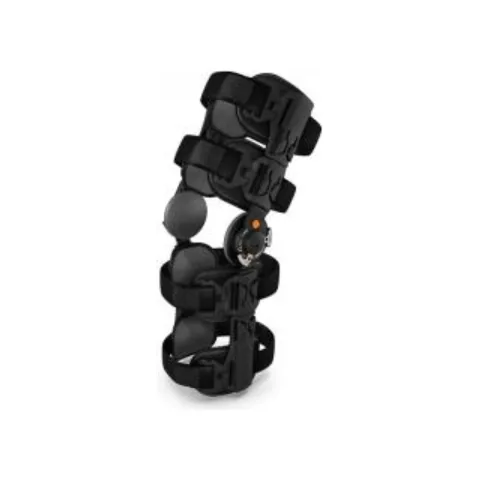
Ortezy kolana i biodra
Orteza stawu kolanowego z regulacją zgięcia ROM-R, ortezy biodra, stabilizatory stawu skokowego.
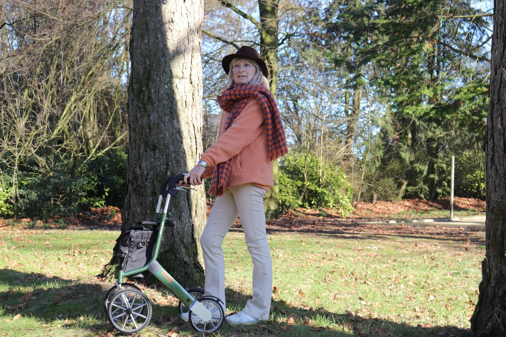
Ortezy, kule, balkoniki, wkładki, obuwie i kompresja. Doradzimy na miejscu i dobierzemy sprzęt do Państwa potrzeb.
Pasaż Jelonki, vis-a-vis Hali Wola. pon.-pt. 9:00-17:00
Sprzęt do rekonwalescencji po operacji i urazie, do rehabilitacji w domu i na co dzień. Sprawdzonych producentów, krajowych i zagranicznych.

Orteza stawu kolanowego z regulacją zgięcia ROM-R, ortezy biodra, stabilizatory stawu skokowego.
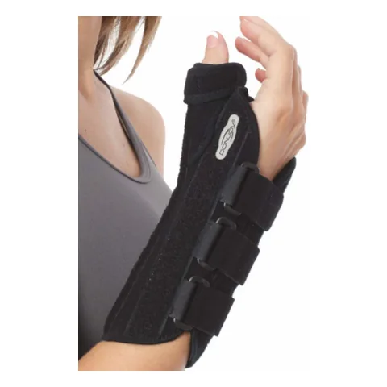
Ortezy nadgarstka z kciukiem, ortezy odwodzące barku, stabilizatory palców.
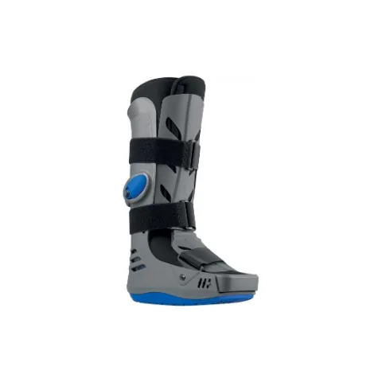
But typu Walker Thuasne, but odciążający przodostopie, ortezy na opadającą stopę.
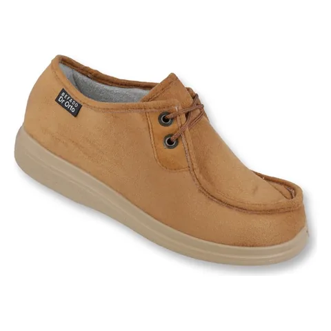
Półbuty i trzewiki, także dla diabetyków, przy haluksach i ostrodze piętowej.
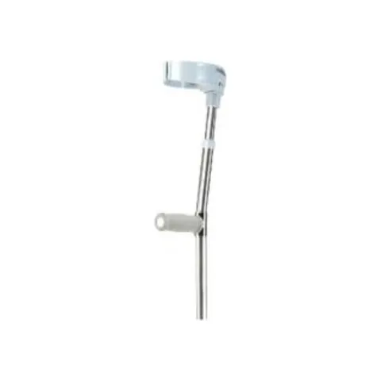
Kule z uchylną obejmą, laski inwalidzkie, końcówki do kul.
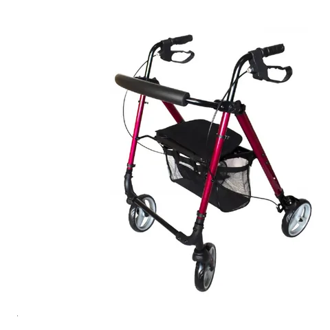
Chodziki, balkoniki, podpórki i wózki inwalidzkie.
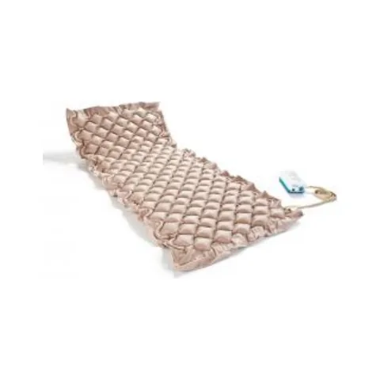
Materace przeciwodleżynowe, poduszki ortopedyczne i sensoryczne, wałki.
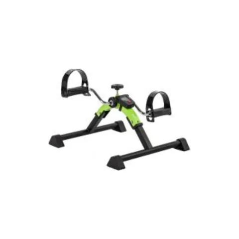
Rotory, piłki, wałki, rollery, taśmy, maty do akupresury, kinesiotaping.
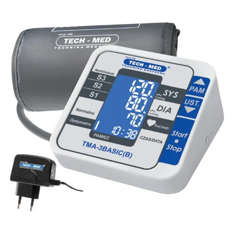
Ciśnieniomierze, pulsoksymetry, termometry, nasadki toaletowe, ławki nawannowe.
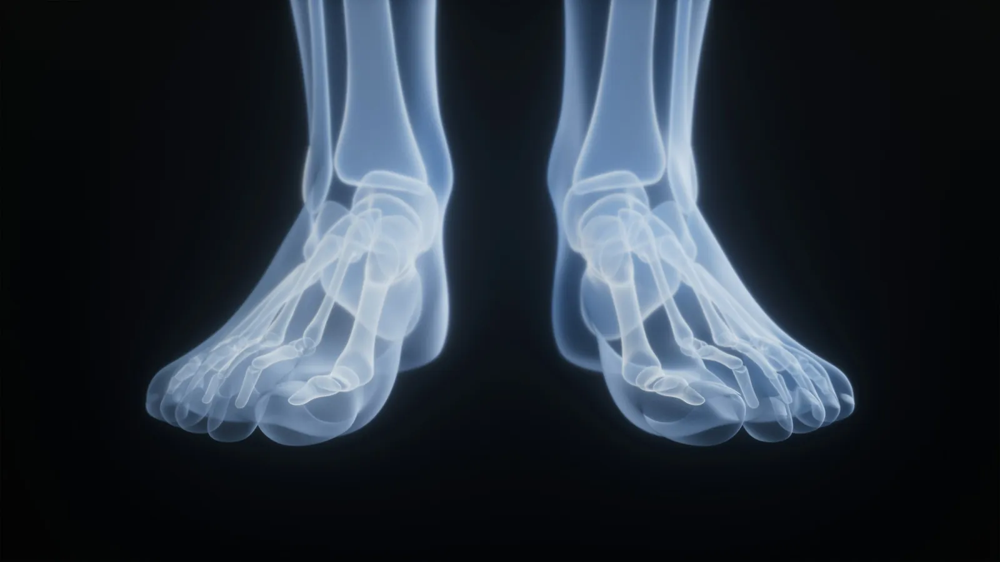
Zanim polecimy wkładkę, sprawdzamy, jak stopa pracuje. Badanie jest też podstawą do wykonania wkładek indywidualnych.
Podoskopocena stopy w spoczynku, metodą statyczną
Plantokonturografocena stopy w ruchu, metodą dynamiczną
Wywiad i ocena fizjoterapeutydobór gotowej wkładki albo wykonanie wkładki indywidualnej
Rajstopy, pończochy, podkolanówki i skarpety przeciwżylakowe i przeciwobrzękowe w 1, 2 i 3 stopniu ucisku. Dobrze dobrana kompresja zaczyna się od pomiaru nogi prawej i lewej we właściwych miejscach.
Na obu nogach, najlepiej rano, zanim pojawi się obrzęk.
Ze zleceniem na wyrób medyczny można przyjść do wybranego sklepu w całej Polsce. Nie obowiązuje rejonizacja.
Wystawia je osoba z prawem wykonywania zawodu medycznego: lekarz, pielęgniarka, położna albo fizjoterapeuta.
Zlecenie może być od razu potwierdzone przez NFZ.
Prosimy zabrać zlecenie papierowe potwierdzone w NFZ albo numer zlecenia i PESEL osoby, na którą je wystawiono.
W ramach tego samego kodu zlecenia można wybrać konkretny produkt. Gdy cena jest wyższa niż limit, dopłaca się tylko różnicę.
Zlecenie jest ważne 12 miesięcy. Wyjątek to zaopatrzenie comiesięczne (np. pieluchomajtki, podkłady, cewniki), które realizuje się tylko w miesiącach wskazanych na zleceniu.
Sprzęt renomowanych firm, który sami znamy i potrafimy dobrać.
Sklep jest w Pasażu Handlowym Jelonki, naprzeciwko Hali Wola. Przed wizytą można zadzwonić i zapytać o konkretny produkt.
ul. Powstańców Śląskich 45 lok. 7
01-355 Warszawa
Pasaż Handlowy Jelonki, vis-a-vis Hala Wola
| Poniedziałek | 9:00-17:00 |
| Wtorek | 9:00-17:00 |
| Środa | 9:00-17:00 |
| Czwartek | 9:00-17:00 |
| Piątek | 9:00-17:00 |
| Sobota | nieczynne |
| Niedziela | nieczynne |